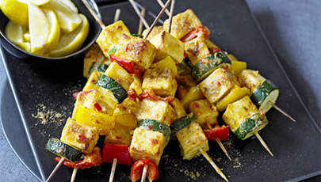

Spicy paneer skewers
These vegetarian kebabs use a firm Indian cheese coated in spices and grilled, perfect for a party.
Close

Nutrition per serving
421 kcalories, protein 17.0g, carbohydrate 10.0g, fat 35.0g
Ingredient
Serves 10
- 600g paneer cheese (see Tip below)
- juice 2 lemons
- 2 tsp ground cumin, plus extra for sprinkling
- 75g gram flour (see Tip below)
- 1 tsp garam masala
- 1 tbsp paprika
- 284ml tub double cream
- 4 garlic cloves, crushed
- 2 red chillies, deseeded and chopped
- 2 peppers, red and yellow, roughly chopped
- 2 courgettes, sliced
- 25g butter, melted
- 2 lemons, cut into wedges
Method
- Soak 12-15 bamboo skewers in water for 15 mins – this helps to stop them from burning under the grill. Cut the paneer cheese into 3cm cubes and toss with the lemon juice and ground cumin. Set aside for 30 mins.
- Sieve the gram flour, garam masala and paprika into a bowl and add the cream, garlic and chopped chillies plus enough water to make a thick batter, then stir until smooth. Drain the paneer and add to the batter with 2 tbsp of the cumin-spiced lemon juice. Coat all the paneer cubes in batter.
- Heat grill to its hottest setting and line the grill pan with foil. Thread the paneer onto skewers, alternating it with chunks of pepper and courgette. Drizzle with batter from the bowl and cook for 4-5 mins on each side, spooning over more batter when you turn them. Grill until charred at the edges. Brush with melted butter, sprinkle with the ground cumin, and serve immediately, accompanied with lemon wedges.